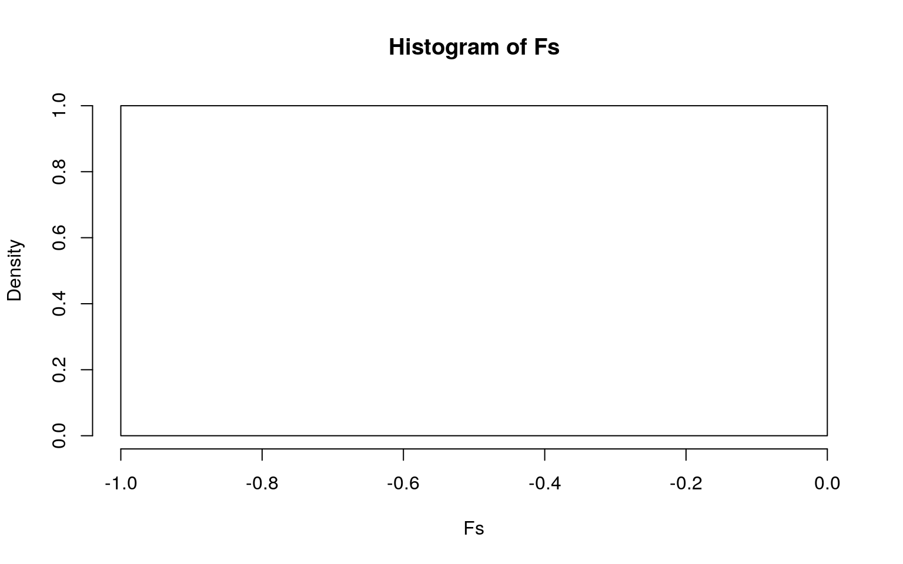
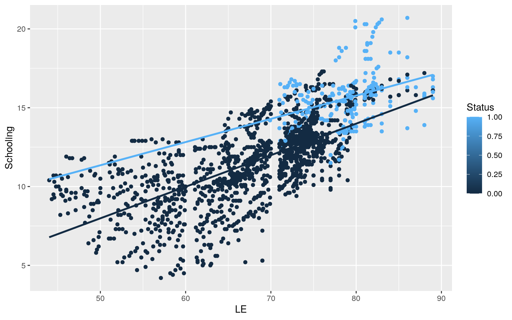
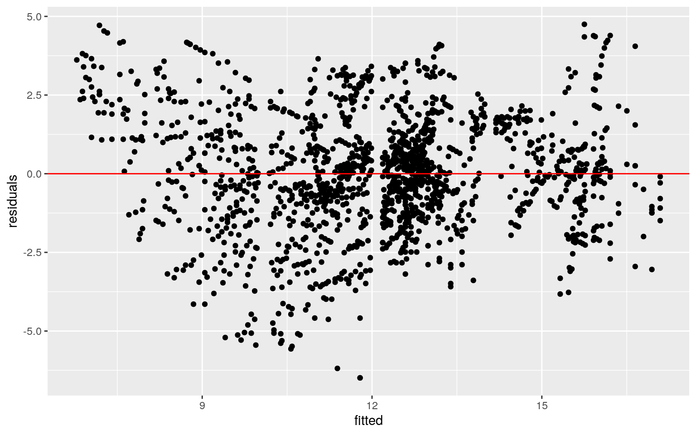
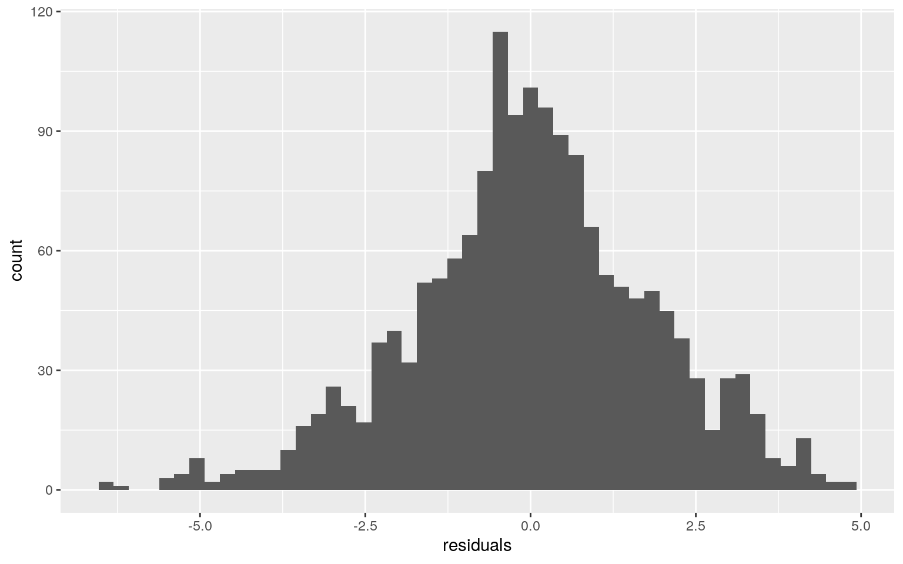
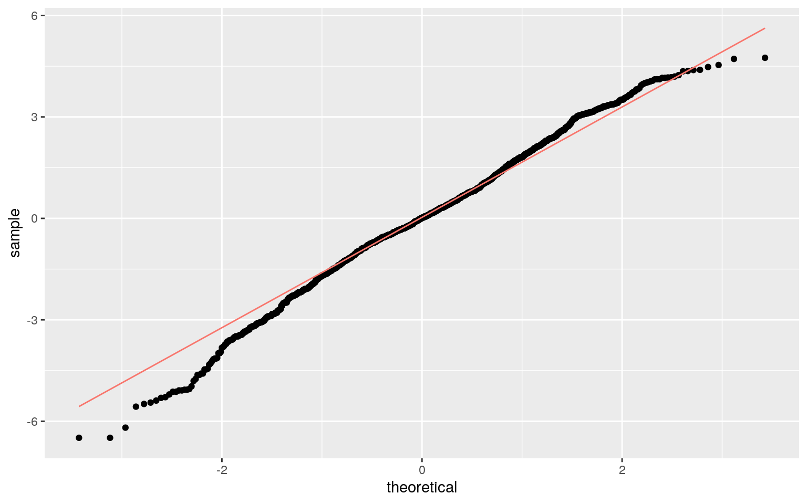
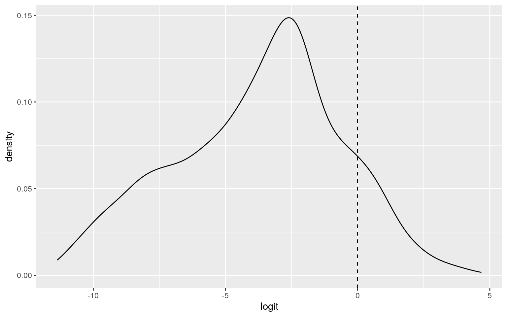

library(readr)
LifeExpectancy <- read_csv("Life Expectancy Data.csv")
names(LifeExpectancy)[4] <- "LE"
names(LifeExpectancy)[5] <- "AM"
names(LifeExpectancy)[6] <- "ID"Introduction: This dataset shows trends of countries based on their status as either developed or developing. There are 26 variables of 2,938 total observations for this dataset. The reason why there are so many observations is because of the amount of countries and the number of years per country. There are too many variables in this dataset, so the ones that I will be looking at the most are country, status (developed or developing), Life expectancy, adult mortality, and infant deaths. I am eager to figure out the trends and differences in various different statistics between developing and developed countries around the world.
manov <-manova(cbind(LE, AM, ID, Schooling)~Status, data=LifeExpectancy)
summary(manov) #MANOVA across European soccer leagues## Df Pillai approx F num Df den Df Pr(>F)
## Status 1 0.28376 273.67 4 2763 < 2.2e-16 ***
## Residuals 2766
## ---
## Signif. codes: 0 '***' 0.001 '**' 0.01 '*' 0.05 '.' 0.1
' ' 1summary.aov(manov) #ANOVA## Response LE :
## Df Sum Sq Mean Sq F value Pr(>F)
## Status 1 54814 54814 808 < 2.2e-16 ***
## Residuals 2766 187643 68
## ---
## Signif. codes: 0 '***' 0.001 '**' 0.01 '*' 0.05 '.' 0.1
' ' 1
##
## Response AM :
## Df Sum Sq Mean Sq F value Pr(>F)
## Status 1 3750282 3750282 272.4 < 2.2e-16 ***
## Residuals 2766 38080655 13767
## ---
## Signif. codes: 0 '***' 0.001 '**' 0.01 '*' 0.05 '.' 0.1
' ' 1
##
## Response ID :
## Df Sum Sq Mean Sq F value Pr(>F)
## Status 1 460658 460658 32.214 1.524e-08 ***
## Residuals 2766 39553848 14300
## ---
## Signif. codes: 0 '***' 0.001 '**' 0.01 '*' 0.05 '.' 0.1
' ' 1
##
## Response Schooling :
## Df Sum Sq Mean Sq F value Pr(>F)
## Status 1 8244.9 8244.9 1002.8 < 2.2e-16 ***
## Residuals 2766 22741.8 8.2
## ---
## Signif. codes: 0 '***' 0.001 '**' 0.01 '*' 0.05 '.' 0.1
' ' 1
##
## 170 observations deleted due to missingnesspairwise.t.test(LifeExpectancy$LE,LifeExpectancy$Status, p.adj="none") #T-tests##
## Pairwise comparisons using t tests with pooled SD
##
## data: LifeExpectancy$LE and LifeExpectancy$Status
##
## Developed
## Developing <2e-16
##
## P value adjustment method: nonepairwise.t.test(LifeExpectancy$AM,LifeExpectancy$Status, p.adj="none")##
## Pairwise comparisons using t tests with pooled SD
##
## data: LifeExpectancy$AM and LifeExpectancy$Status
##
## Developed
## Developing <2e-16
##
## P value adjustment method: nonepairwise.t.test(LifeExpectancy$ID,LifeExpectancy$Status, p.adj="none")##
## Pairwise comparisons using t tests with pooled SD
##
## data: LifeExpectancy$ID and LifeExpectancy$Status
##
## Developed
## Developing 1.1e-09
##
## P value adjustment method: nonepairwise.t.test(LifeExpectancy$Schooling,LifeExpectancy$Status, p.adj="none")##
## Pairwise comparisons using t tests with pooled SD
##
## data: LifeExpectancy$Schooling and LifeExpectancy$Status
##
## Developed
## Developing <2e-16
##
## P value adjustment method: none1-(1-.05)^9 #chance of type 1 error## [1] 0.36975060.05/9 #Bonferroni correction## [1] 0.005555556Overall, 1 MANOVA, 4 ANOVAS, and 4 t-tests were done for a total of 9 tests. I calculated the chances of type 1 error and figured there is 0.3698 chance of a type 1 error occurring. I also adjusted the significance level using the Bonferroni Correction to a value of 0.0056. Additionally, I found a few main findings using the Bonferroni corrected significance level. I found that the there is a significant difference in life expectancy, adult mortality, schooling, and infant deaths between developing and developed countries. Lastly, there are many MANOVA test assumptions including large sample size, independent observations, multivariate normality, homogeneity of variances, etc. The likelihood of all MANOVA assumptions to be met is very low due to the multifaceted complexity of these assumptions.
library(Hmisc)
library(plyr)
#randomization
LifeExpectancy <- na.omit(LifeExpectancy)
summary(aov(LE~Status,data=LifeExpectancy))## Df Sum Sq Mean Sq F value Pr(>F)
## Status 1 25005 25005 401.7 <2e-16 ***
## Residuals 1647 102525 62
## ---
## Signif. codes: 0 '***' 0.001 '**' 0.01 '*' 0.05 '.' 0.1
' ' 1obs_F<- 401.7
Fs<-replicate(5000,{
new <- LifeExpectancy %>% mutate(LE=sample(LE))
SSW <- new %>% group_by(Status) %>% summarize(SSW=sum((LE-mean(LE))^2)) %>% summarize(sum(SSW)) %>% pull
SSB <- new %>% mutate(mean=mean(LE)) %>% group_by(Status) %>% mutate(groupmean=mean(LE)) %>% summarize(SSB=sum((mean-groupmean)^2)) %>% summarize(sum(SSB)) %>% pull
(SSB/1)/(SSW/1647)
})
mean(Fs>obs_F)## [1] 0hist(Fs, prob=T); abline(v = obs_F, col="red",add=T) Null: Life Expectancy of developed countries does not differ from life expectancy of devloping countries. Alternative Hypothesis: Life expectancy of developed countries differs from life expectancy of devloping countries. Since the p-value is 0 which is less than 0.05, we may reject the null hypothesis and conclude that life expectancy of developed and developing countries differ significantly.
library(ggplot2)
#mean centering
LE2 <- LifeExpectancy %>% mutate(LE = LE - mean(LE, na.rm = T))
LE2 <- LifeExpectancy %>% mutate(AM = AM - mean(AM, na.rm = T))
LE2 <- LifeExpectancy %>% mutate(ID = ID - mean(ID, na.rm = T))
LE2 <- LifeExpectancy %>% mutate(Schooling = Schooling - mean(Schooling, na.rm = T))
LE2 <- LifeExpectancy %>% mutate(Status=ifelse(Status=="Developed",1,0))
#linear regression
Regr <- lm(Schooling~LE*Status, data = LE2)
summary(Regr)##
## Call:
## lm(formula = Schooling ~ LE * Status, data = LE2)
##
## Residuals:
## Min 1Q Median 3Q Max
## -6.4886 -1.0695 0.0116 1.1314 4.7486
##
## Coefficients:
## Estimate Std. Error t value Pr(>|t|)
## (Intercept) -2.02365 0.39693 -5.098 3.82e-07 ***
## LE 0.20018 0.00582 34.395 < 2e-16 ***
## Status 6.01298 2.20171 2.731 0.00638 **
## LE:Status -0.05297 0.02809 -1.886 0.05952 .
## ---
## Signif. codes: 0 '***' 0.001 '**' 0.01 '*' 0.05 '.' 0.1
' ' 1
##
## Residual standard error: 1.823 on 1645 degrees of
freedom
## Multiple R-squared: 0.5754, Adjusted R-squared: 0.5747
## F-statistic: 743.2 on 3 and 1645 DF, p-value: < 2.2e-16#regression ggplot
ggplot(LE2, aes(x = LE, y = Schooling, group = Status)) + geom_point(aes(color=Status)) +
geom_smooth(method="lm", se=F,fullrange=T,aes(color=Status)) 
#assumptions
residuals <- Regr$residuals
fitted <- Regr$fitted.values
ggplot(data.frame(fitted,residuals), aes(fitted,residuals)) + geom_point() + geom_hline(yintercept=0, color='red')
ggplot() + geom_histogram(aes(residuals), bins=50)
ggplot() + geom_qq(aes(sample=residuals)) + geom_qq_line(aes(sample=residuals, color='red')) + theme(legend.position = "none")
#SE
library(lmtest)
library(sandwich)
coeftest(Regr)##
## t test of coefficients:
##
## Estimate Std. Error t value Pr(>|t|)
## (Intercept) -2.023654 0.396929 -5.0983 3.823e-07 ***
## LE 0.200178 0.005820 34.3947 < 2.2e-16 ***
## Status 6.012976 2.201714 2.7310 0.006381 **
## LE:Status -0.052968 0.028090 -1.8857 0.059516 .
## ---
## Signif. codes: 0 '***' 0.001 '**' 0.01 '*' 0.05 '.' 0.1
' ' 1coeftest(Regr, vcov = vcovHC(Regr)) #robust##
## t test of coefficients:
##
## Estimate Std. Error t value Pr(>|t|)
## (Intercept) -2.0236541 0.4702893 -4.3030 1.784e-05 ***
## LE 0.2001781 0.0066794 29.9697 < 2.2e-16 ***
## Status 6.0129756 1.8502868 3.2498 0.001178 **
## LE:Status -0.0529678 0.0240325 -2.2040 0.027662 *
## ---
## Signif. codes: 0 '***' 0.001 '**' 0.01 '*' 0.05 '.' 0.1
' ' 1Regr2 <- lm(Schooling~LE + Status, data = LE2)
summary(Regr2)##
## Call:
## lm(formula = Schooling ~ LE + Status, data = LE2)
##
## Residuals:
## Min 1Q Median 3Q Max
## -6.4856 -1.0555 0.0103 1.1341 4.6873
##
## Coefficients:
## Estimate Std. Error t value Pr(>|t|)
## (Intercept) -1.869742 0.388747 -4.81 1.65e-06 ***
## LE 0.197904 0.005698 34.73 < 2e-16 ***
## Status 1.869868 0.141610 13.20 < 2e-16 ***
## ---
## Signif. codes: 0 '***' 0.001 '**' 0.01 '*' 0.05 '.' 0.1
' ' 1
##
## Residual standard error: 1.825 on 1646 degrees of
freedom
## Multiple R-squared: 0.5745, Adjusted R-squared: 0.574
## F-statistic: 1111 on 2 and 1646 DF, p-value: < 2.2e-16lrtest(Regr, Regr2)## Likelihood ratio test
##
## Model 1: Schooling ~ LE * Status
## Model 2: Schooling ~ LE + Status
## #Df LogLik Df Chisq Pr(>Chisq)
## 1 5 -3328.1
## 2 4 -3329.9 -1 3.5605 0.05917 .
## ---
## Signif. codes: 0 '***' 0.001 '**' 0.01 '*' 0.05 '.' 0.1
' ' 1I obtained many coefficients using the linear regression. For countries with average life expectancy, schooling is 2.02 less in developing countries than developed countries. While controlling for country status, for every year increase in Life Expectancy, schooling increases by about a rating of 0.2. Additionally, controlling for life expectancy, there is a 6.01 difference in schooling between developed and developing countries. Also, there was no significant observable changes between the regular standard error and the robust standard error because the significance level did not change for any of the variables. Lastly, using the r-squared value, I know that my model explains 57.47 percent of the variation in the outcome.
#bootstrapped SE
bootstrap <- replicate(5000, {
databootstrap <- sample_frac(LE2, replace = T)
fit<-lm(Schooling~LE*Status, data = databootstrap)
coef(fit)
})When SE increases, the t decreases and p values increase. In the bootstrapped standard errors the intercept SE increased, the life expectancy SE decreased, and the status SE decreased. Also, these same trends hold true for the robust SEs as well. With this being said, the t-value decreased for the intercept, increased for life expectancy, and increased for status between bootstrap SE and normal or robust SEs. Lastly, the p-value increase for the intercept, decreased for life expectancy, and decreases for status between bootstrap SE and normal or robust SEs.
#logistic regression
logreg <- glm(Status~Schooling + LE +AM, data = LE2, family="binomial")
coeftest(logreg)##
## z test of coefficients:
##
## Estimate Std. Error z value Pr(>|z|)
## (Intercept) -21.8438851 1.9980853 -10.9324 < 2.2e-16 ***
## Schooling 0.6620635 0.0678865 9.7525 < 2.2e-16 ***
## LE 0.1507742 0.0277663 5.4301 5.631e-08 ***
## AM -0.0023316 0.0017169 -1.3581 0.1744
## ---
## Signif. codes: 0 '***' 0.001 '**' 0.01 '*' 0.05 '.' 0.1
' ' 1exp(coef(logreg)) %>% data.frame()## .
## (Intercept) 3.260778e-10
## Schooling 1.938789e+00
## LE 1.162734e+00
## AM 9.976711e-01#confusion matrix
confusion <- predict(logreg, type = "response")
table(truth=LE2$Status,predict=as.numeric(confusion>.5)) %>% addmargins## predict
## truth 0 1 Sum
## 0 1338 69 1407
## 1 127 115 242
## Sum 1465 184 1649#Accuracy
#Sensitivity(TPR)
#Specificity (TNR)
#Precision (PPV)#Density log-odds plot
LE2$logit <- predict(logreg)
ggplot(LE2, aes(logit, fill=Status)) + geom_density(alpha=0.3) + geom_vline(xintercept=0, lty=2)
#LASSO regression
library(glmnet)
lasso <- glm(Status ~ -1 + LE + AM + ID + Schooling, data = LE2, family = "binomial")
y <- as.matrix(LE2$Status)
x <- model.matrix(lasso)
x <- scale(x)
cv <- cv.glmnet(x,y, family='binomial')
lasso2 <- glmnet(x,y,family="binomial",lambda=cv$lambda.1se)
coef(cv)## 5 x 1 sparse Matrix of class "dgCMatrix"
## 1
## (Intercept) -5.7838642
## LE 1.1900592
## AM -0.2217031
## ID -9.2246578
## Schooling 1.7230571probab <- predict(lasso, type="response")#10-fold CV
set.seed(1234)
k=10
data10 <- LE2[sample(nrow(LE2)),]A knitted R Markdown document (preferably HTML) and the raw R Markdown file (as .Rmd) should both be submitted to Canvas by 11:59pm on the due date. These two documents will be graded jointly, so they must be consistent (i.e., don’t change the R Markdown file without also updating the knitted document). Knit an html copy too, for later! In the .Rmd file for Project 2, you can copy the first code-chunk into your project .Rmd file to get better formatting. Notice that you can adjust the opts_chunk$set(...) above to set certain parameters if necessary to make the knitting cleaner (you can globally set the size of all plots, etc). You can copy the set-up chunk in Project2.Rmd: I have gone ahead and set a few for you (such as disabling warnings and package-loading messges when knitting)!
Like before, I envision your written text forming something of a narrative structure around your code/output. All results presented must have corresponding code. Any answers/results/plots etc. given without the corresponding R code that generated the result will not be graded. Furthermore, all code contained in our project document should work properly. Please do not include any extraneous code or code which produces error messages. (Code which produces warnings is fine as long as you understand what the warnings mean.)
Find one dataset with at least 5 variables (ideally more!) that you want to use to build models/test hypotheses. At least one should be categorical (with 2-5 groups, ideally; definitely fewer than 10) and at least two should be numeric (taking on more than 10 distinct values). Ideally, at least of your variables will be binary (if not, you will have to create one by discretizing a numeric or collapsing levels of a categorical). You will need a minimum of 40 observations (at least 10 observations for every explanatory variable you have, ideally 20+ observations/variable).
It is perfectly fine to use either dataset (or the merged dataset, or a subset of your variables) from Project 1. However, I might encourage you to diversify things a bit and choose a different dataset to work with (particularly if the variables did not reveal interesting associations in Project 1 that you want to follow up with). The only requirement/restriction is that you may not use data from any examples we have done in class or lab. It would be a good idea to pick more cohesive data this time around (i.e., variables that you actually thing might have a relationship you would want to test). Think more along the lines of your Biostats project.
Again, you can use data from anywhere you want (see bottom for resources)! If you want a quick way to see whether a built-in (R) dataset has binary and/or character (i.e., categorical) variables, check out this list: https://vincentarelbundock.github.io/Rdatasets/datasets.html.
0. (5 pts) Introduce your dataset and each of your variables (or just your main variables if you have lots) in a paragraph. What are they measuring? How many observations?
1. (15 pts) Perform a MANOVA testing whether any of your numeric variables (or a subset of them, if including them all is unreasonable or doesn't make sense) show a mean difference across levels of one of your categorical variables (3). If they do, perform univariate ANOVAs to find response(s) showing a mean difference across groups (3), and perform post-hoc t tests to find which groups differ (3). Discuss the number of tests you have performed, calculate the probability of at least one type I error (if unadjusted), and adjust the significance level accordingly (bonferroni correction) before discussing significant differences (3). Briefly discuss MANOVA assumptions and whether or not they are likely to have been met (no need for anything too in-depth) (2).
2. (10 pts) Perform some kind of randomization test on your data (that makes sense). The statistic can be anything you want (mean difference, correlation, F-statistic/ANOVA, chi-squared), etc. State null and alternative hypotheses, perform the test, and interpret the results (7). Create a plot visualizing the null distribution and the test statistic (3).
3. (35 pts) Build a linear regression model predicting one of your response variables from at least 2 other variables, including their interaction. Mean-center any numeric variables involved in the interaction.
ggplot() using geom_smooth(method="lm"). If your interaction is numeric by numeric, refer to code in the slides to make the plot or check out the interactions package, which makes this easier. If you have 3 or more predictors, just chose two of them to plot for convenience. (8)coeftest(..., vcov=vcovHC(...)). Discuss significance of results, including any changes from before/after robust SEs if applicable. (8)4. (5 pts) Rerun same regression model (with the interaction), but this time compute bootstrapped standard errors (either by resampling observations or residuals). Discuss any changes you observe in SEs and p-values using these SEs compared to the original SEs and the robust SEs)
5. (25 pts) Fit a logistic regression model predicting a binary variable (if you don't have one, make/get one) from at least two explanatory variables (interaction not necessary).
6. (25 pts) Perform a logistic regression predicting the same binary response variable from ALL of the rest of your variables (the more, the better!)
lambda.1se). Discuss which variables are retained. (5)You can choose ANY datasets you want that meet the above criteria for variables and observations. You can make it as serious as you want, or not, but keep in mind that you will be incorporating this project into a portfolio webpage for your final in this course, so choose something that really reflects who you are, or something that you feel will advance you in the direction you hope to move career-wise, or something that you think is really neat, or whatever. On the flip side, regardless of what you pick, you will be performing all the same tasks, so it doesn't end up being that big of a deal.
If you are totally clueless and have no direction at all, log into the server and type
data(package = .packages(all.available = TRUE))This will print out a list of ALL datasets in ALL packages installed on the server (a ton)! Scroll until your eyes bleed! Actually, do not scroll that much... To start with something more manageable, just run the command on your own computer, or just run data() to bring up the datasets in your current environment. To read more about a dataset, do ?packagename::datasetname.
If it is easier for you, and in case you don't have many packages installed, a list of R datasets from a few common packages (also downloadable in CSV format) is given at the following website: https://vincentarelbundock.github.io/Rdatasets/datasets.html.
A good package to download for fun/relevant data is fivethiryeight. Run install.packages("fivethirtyeight"), load the packages with library(fivethirtyeight), run data(), and then scroll down to view the datasets. Here is an online list of all 127 datasets (with links to the 538 articles). Lots of sports, politics, current events, etc.
If you have already started to specialize (e.g., ecology, epidemiology) you might look at discipline-specific R packages (vegan, epi, respectively). We will be using some tools from these packages later in the course, but they come with lots of data too, which you can explore according to the directions above
However, you emphatically DO NOT have to use datasets available via R packages! In fact, I would much prefer it if you found the data from completely separate sources and brought them together (a much more realistic experience in the real world)! You can even reuse data from your SDS328M project, provided it shares a variable in common with other data which allows you to merge the two together (e.g., if you still had the timestamp, you could look up the weather that day: https://www.wunderground.com/history/). If you work in a research lab or have access to old data, you could potentially merge it with new data from your lab!
Here is a curated list of interesting datasets (read-only spreadsheet format): https://docs.google.com/spreadsheets/d/1wZhPLMCHKJvwOkP4juclhjFgqIY8fQFMemwKL2c64vk/edit
Here is another great compilation of datasets: https://github.com/rfordatascience/tidytuesday
Here is the UCI Machine Learning Repository: https://archive.ics.uci.edu/ml/index.php
Here is another good general place to look: https://www.kaggle.com/datasets
To help narrow your search down or to see interesting variable ideas, check out https://www.tylervigen.com/spurious-correlations. This is the spurious correlations website, and it is fun, but if you look at the bottom of each plot you will see sources for the data. This is a good place to find very general data (or at least get a sense of where you can scrape data together from)!
If you are interested in medical data, check out www.countyhealthrankings.org
If you are interested in scraping UT data, they make loads of data public (e.g., beyond just professor CVs and syllabi). Check out all the data that is available in the statistical handbooks: https://reports.utexas.edu/statistical-handbook
Data.gov 186,000+ datasets!
Social Explorer is a nice interface to Census and American Community Survey data (more user-friendly than the government sites). May need to sign up for a free trial.
U.S. Bureau of Labor Statistics
Gapminder, data about the world.
...